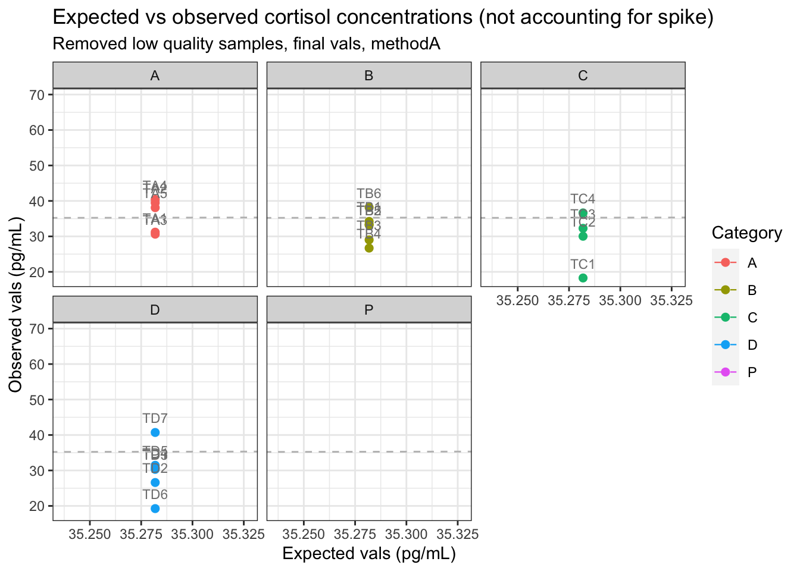
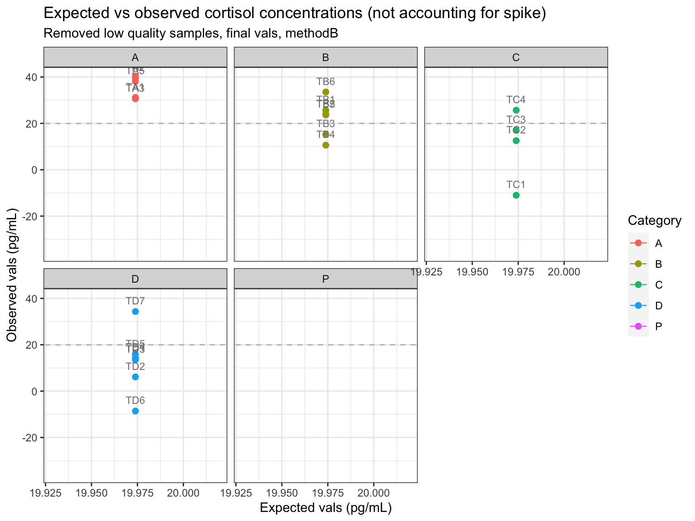
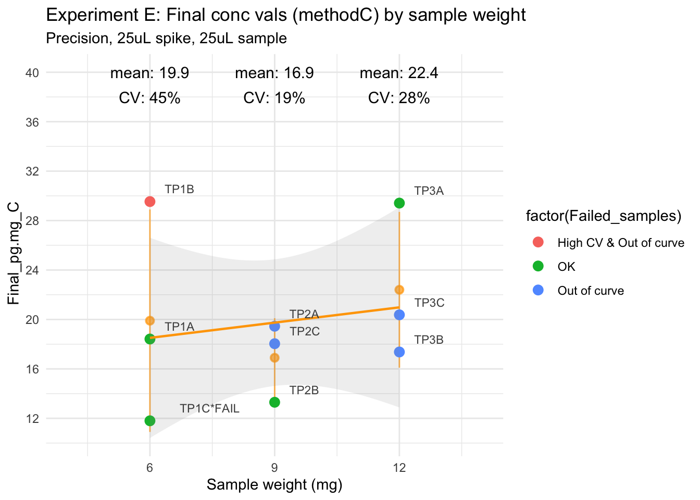

Analysis of final values - test4
Paloma
2025-04-23
Last updated: 2025-04-23
Checks: 6 1
Knit directory:
HairCort-Evaluation-Nist2020/
This reproducible R Markdown analysis was created with workflowr (version 1.7.1). The Checks tab describes the reproducibility checks that were applied when the results were created. The Past versions tab lists the development history.
The R Markdown file has unstaged changes. To know which version of
the R Markdown file created these results, you’ll want to first commit
it to the Git repo. If you’re still working on the analysis, you can
ignore this warning. When you’re finished, you can run
wflow_publish to commit the R Markdown file and build the
HTML.
Great job! The global environment was empty. Objects defined in the global environment can affect the analysis in your R Markdown file in unknown ways. For reproduciblity it’s best to always run the code in an empty environment.
The command set.seed(20241016) was run prior to running
the code in the R Markdown file. Setting a seed ensures that any results
that rely on randomness, e.g. subsampling or permutations, are
reproducible.
Great job! Recording the operating system, R version, and package versions is critical for reproducibility.
Nice! There were no cached chunks for this analysis, so you can be confident that you successfully produced the results during this run.
Great job! Using relative paths to the files within your workflowr project makes it easier to run your code on other machines.
Great! You are using Git for version control. Tracking code development and connecting the code version to the results is critical for reproducibility.
The results in this page were generated with repository version 7240d2e. See the Past versions tab to see a history of the changes made to the R Markdown and HTML files.
Note that you need to be careful to ensure that all relevant files for
the analysis have been committed to Git prior to generating the results
(you can use wflow_publish or
wflow_git_commit). workflowr only checks the R Markdown
file, but you know if there are other scripts or data files that it
depends on. Below is the status of the Git repository when the results
were generated:
Ignored files:
Ignored: .DS_Store
Ignored: .RData
Ignored: .Rhistory
Ignored: analysis/.DS_Store
Ignored: analysis/.Rhistory
Ignored: data/.DS_Store
Ignored: data/Test3/.DS_Store
Ignored: data/Test4/.DS_Store
Untracked files:
Untracked: data/Test4/Data_cort_values_method_ALL.csv
Unstaged changes:
Modified: analysis/ELISA_Analysis_FinalVals_comparisons_test3_test4.Rmd
Modified: analysis/ELISA_Analysis_FinalVals_test4.Rmd
Modified: analysis/ELISA_Calc_FinalVals_test3.Rmd
Modified: analysis/ELISA_Calc_FinalVals_test4.Rmd
Modified: data/Test3/Data_Cortisol_Processed.csv
Modified: data/Test3/Data_QC_flagged.csv
Modified: data/Test3/Data_cort_values_methodA.csv
Modified: data/Test3/Data_cort_values_methodB.csv
Modified: data/Test3/Data_cort_values_methodC.csv
Deleted: data/Test3/Data_cort_values_methodD.csv
Modified: data/Test4/Data_Cortisol_Processed.csv
Modified: data/Test4/Data_cort_values_methodA.csv
Modified: data/Test4/Data_cort_values_methodB.csv
Modified: data/Test4/Data_cort_values_methodC.csv
Note that any generated files, e.g. HTML, png, CSS, etc., are not included in this status report because it is ok for generated content to have uncommitted changes.
These are the previous versions of the repository in which changes were
made to the R Markdown
(analysis/ELISA_Analysis_FinalVals_test4.Rmd) and HTML
(docs/ELISA_Analysis_FinalVals_test4.html) files. If you’ve
configured a remote Git repository (see ?wflow_git_remote),
click on the hyperlinks in the table below to view the files as they
were in that past version.
| File | Version | Author | Date | Message |
|---|---|---|---|---|
| Rmd | 82ad928 | Paloma | 2025-04-17 | upd |
| html | 82ad928 | Paloma | 2025-04-17 | upd |
| html | ccad031 | Paloma | 2025-04-09 | new_calc |
| Rmd | 961ce6a | Paloma | 2025-04-05 | upd calc |
| html | 961ce6a | Paloma | 2025-04-05 | upd calc |
| Rmd | ced6eed | Paloma | 2025-04-03 | upd |
| html | ced6eed | Paloma | 2025-04-03 | upd |
| Rmd | 4bc45b5 | Paloma | 2025-04-02 | recalc-total |
| html | 4bc45b5 | Paloma | 2025-04-02 | recalc-total |
| Rmd | e97ccaf | Paloma | 2025-04-01 | test4-clean |
| html | e97ccaf | Paloma | 2025-04-01 | test4-clean |
| Rmd | 87248a1 | Paloma | 2025-04-01 | upd |
Introduction
Here I plan to include measurements and visualizations of the accuracy, precision, and linearity of ELISA #4. I will do this using two different ways of calculating final values: the standard method not accounting for spike, and an alternative method accounting for it. The way the spike is included in the formula is defined in file ELISA_Calc_FinalVals_test4.html.
Overall Results
A) Standard method

B) Accounting for spike (Nist et al. 2020)

C) Sam’s Method

Accuracy
Accuracy, or recovery %, is the ratio between observed and expected concentration, multiplied by 100. Expected values are defined using the dilution factor, starting with the concentrastion value of the neat sample.
80–120% is generally acceptable for biological assays.
70–130% may be acceptable at very low concentrations.
Method A
Wells Sample Category Binding.Perc Ave_Conc_ug.dl Ave_Conc_pg.ml Weight_mg
1 C3 TA1 A 14.0 0.461700 4617.00 50
2 E3 TA2 A 22.4 0.292100 2921.00 50
3 G3 TA3 A 44.3 0.113300 1133.00 50
4 A4 TA4 A 55.2 0.074740 747.40 50
5 C4 TA5 A 74.1 0.035240 352.40 50
6 E4 TA6 A 84.2 0.022600 226.00 50
7 G4 TA7 A 103.0 0.006213 62.13 50
8 A5 TB1 B 12.3 0.513400 5134.00 50
9 C5 TB2 B 25.5 0.250300 2503.00 50
10 E5 TB3 B 45.3 0.108800 1088.00 50
11 G5 TB4 B 65.5 0.050060 500.60 50
12 A6 TB5 B 76.9 0.031150 311.50 50
13 C6 TB6 B 88.2 0.017890 178.90 50
14 E6 TB7 B 87.0 0.019440 194.40 50
15 G6 TC1 C 25.8 0.246700 2467.00 50
16 A7 TC2 C 30.1 0.202700 2027.00 50
17 C7 TC3 C 45.5 0.108900 1089.00 50
18 E7 TC4 C 60.2 0.061800 618.00 50
19 G7 TC5 C 92.0 0.014450 144.50 50
20 A8 TC6 C 97.7 0.009749 97.49 50
21 C8 TC7 C 96.4 0.010750 107.50 50
22 E8 TD1 D 15.7 0.416800 4168.00 20
23 G8 TD2 D 32.7 0.181400 1814.00 20
24 A9 TD3 D 46.7 0.103300 1033.00 20
25 C9 TD4 D 64.3 0.052510 525.10 20
26 E9 TD5 D 80.2 0.026800 268.00 20
27 G9 TD6 D 99.7 0.008199 81.99 20
28 A10 TD7 D 99.0 0.008673 86.73 20
Buffer_ml Spike SpikeVol_ul Dilution_sample Dilution_spike Extraction_ratio
1 0.25 0 0 1 1 1.351351
2 0.25 0 0 2 1 1.351351
3 0.25 0 0 4 1 1.351351
4 0.25 0 0 8 1 1.351351
5 0.25 0 0 16 1 1.351351
6 0.25 0 0 32 1 1.351351
7 0.25 0 0 64 1 1.351351
8 0.25 1 25 1 1 1.333333
9 0.25 1 25 2 2 1.333333
10 0.25 1 25 4 4 1.333333
11 0.25 1 25 8 8 1.333333
12 0.25 1 25 16 16 1.333333
13 0.25 1 25 32 32 1.333333
14 0.25 1 25 64 64 1.333333
15 0.25 1 25 1 1 1.481481
16 0.25 1 25 2 1 1.481481
17 0.25 1 25 4 1 1.481481
18 0.25 1 25 8 1 1.481481
19 0.25 0 0 16 1 1.481481
20 0.25 0 0 32 1 1.481481
21 0.25 0 0 64 1 1.481481
22 0.11 1 110 1 1 1.333333
23 0.11 1 110 2 2 1.333333
24 0.11 1 110 4 4 1.333333
25 0.11 1 110 8 8 1.333333
26 0.11 1 110 16 16 1.333333
27 0.11 1 110 32 32 1.333333
28 0.11 1 110 64 64 1.333333
Vol_in_well.tube_ul Failed_samples Final_pg.mg_A Final_pg.mg_B
1 50 Out of curve 31.19595 31.1959459
2 50 High CV 39.47297 39.4729730
3 50 OK 30.62162 30.6216216
4 50 OK 40.40000 40.4000000
5 50 OK 38.09730 38.0972973
6 50 High CV & Out of curve 48.86486 48.8648649
7 50 High CV & Out of curve 26.86703 26.8670270
8 275 Out of curve 34.22667 25.6600000
9 250 OK 33.37333 -4.7100000
10 250 OK 29.01333 -7.0716667
11 250 OK 26.69867 -4.5148333
12 250 OK 33.22667 -2.4150000
13 250 Out of curve 38.16533 -1.2627500
14 250 High CV & Out of curve 82.94400 -0.6281458
15 275 OK 18.27407 -11.0000000
16 275 OK 30.02963 -8.7592593
17 275 OK 32.26667 -7.8537037
18 275 OK 36.62222 -4.7990741
19 250 High CV & Out of curve 17.12593 17.1259259
20 250 High CV & Out of curve 23.10874 23.1087407
21 250 High CV & Out of curve 50.96296 50.9629629
22 220 Out of curve 30.56533 14.0580000
23 220 OK 26.60533 -10.2336667
24 220 OK 30.30133 -7.9805000
25 220 OK 30.80587 -4.9214000
26 220 Out of curve 31.44533 -2.6963750
27 220 Out of curve 19.24032 -1.4334421
28 220 Out of curve 40.70528 -0.7156348
SpikeVol_ml Vol_in_well.tube_ml Spike_contribution Final_pg.mg_C Sample_num
1 0.000 0.050 0.000000 31.195946 1
2 0.000 0.050 0.000000 39.472973 2
3 0.000 0.050 0.000000 30.621622 3
4 0.000 0.050 0.000000 40.400000 4
5 0.000 0.050 0.000000 38.097297 5
6 0.000 0.050 0.000000 48.864865 6
7 0.000 0.050 0.000000 26.867027 7
8 0.025 0.275 291.772727 32.281515 8
9 0.025 0.250 160.475000 31.233667 9
10 0.025 0.250 80.237500 26.873667 10
11 0.025 0.250 40.118750 24.559000 11
12 0.025 0.250 20.059375 31.087000 12
13 0.025 0.250 10.029687 36.025667 13
14 0.025 0.250 5.014844 80.804333 14
15 0.025 0.275 291.772727 16.112795 15
16 0.025 0.275 291.772727 25.707071 16
17 0.025 0.275 291.772727 23.621549 17
18 0.025 0.275 291.772727 19.331987 18
19 0.000 0.250 0.000000 17.125926 19
20 0.000 0.250 0.000000 23.108741 20
21 0.000 0.250 0.000000 50.962963 21
22 0.110 0.220 1604.750000 18.797167 22
23 0.110 0.220 802.375000 14.837167 23
24 0.110 0.220 401.187500 18.533167 24
25 0.110 0.220 200.593750 19.037700 25
26 0.110 0.220 100.296875 19.677167 26
27 0.110 0.220 50.148438 7.472153 27
28 0.110 0.220 25.074219 28.937113 28
Expected_A Expected_B Expected_C
1 31.1959500 31.1959459 30.7800000
2 15.5979750 15.5979730 15.3900000
3 7.7989875 7.7989865 7.6950000
4 3.8994937 3.8994932 3.8475000
5 1.9497469 1.9497466 1.9237500
6 0.9748734 0.9748733 0.9618750
7 0.4874367 0.4874367 0.4809375
8 34.2266667 25.6600000 32.2815152
9 17.1133334 12.8300000 16.1407576
10 8.5566667 6.4150000 8.0703788
11 4.2783333 3.2075000 4.0351894
12 2.1391667 1.6037500 2.0175947
13 1.0695833 0.8018750 1.0087974
14 0.5347917 0.4009375 0.5043987
15 18.2740700 -11.0000000 14.5015152
16 9.1370350 -5.5000000 7.2507576
17 4.5685175 -2.7500000 3.6253788
18 2.2842587 -1.3750000 1.8126894
19 1.1421294 -0.6875000 0.9063447
20 0.5710647 -0.3437500 0.4531724
21 0.2855323 -0.1718750 0.2265862
22 30.5653333 14.0580000 18.7971667
23 15.2826666 7.0290000 9.3985833
24 7.6413333 3.5145000 4.6992917
25 3.8206667 1.7572500 2.3496458
26 1.9103333 0.8786250 1.1748229
27 0.9551667 0.4393125 0.5874115
28 0.4775833 0.2196562 0.2937057
Method B

Precision
Method A (controlling for dilution and weight)
# A tibble: 22 × 4
Group cv_BP mean_BP sd_BP
<chr> <dbl> <dbl> <dbl>
1 TA1 NA 31.2 NA
2 TA2 NA 39.5 NA
3 TA3 NA 30.6 NA
4 TA4 NA 40.4 NA
5 TA5 NA 38.1 NA
6 TB1 NA 34.2 NA
7 TB2 NA 33.4 NA
8 TB3 NA 29 NA
9 TB4 NA 26.7 NA
10 TB5 NA 33.2 NA
# ℹ 12 more rows
# A tibble: 22 × 4
Group cv_BP mean_BP sd_BP
<chr> <dbl> <dbl> <dbl>
1 TA1 NA 31.2 NA
2 TA2 NA 39.5 NA
3 TA3 NA 30.6 NA
4 TA4 NA 40.4 NA
5 TA5 NA 38.1 NA
6 TB1 NA 34.2 NA
7 TB2 NA 33.4 NA
8 TB3 NA 29 NA
9 TB4 NA 26.7 NA
10 TB5 NA 33.2 NA
# ℹ 12 more rowsMethod B (controlling for dilution, weight and spike)

# A tibble: 3 × 4
Group CV_BP mean_BP sd_BP
<chr> <dbl> <dbl> <dbl>
1 TP1 -308. -8.50 26.1
2 TP2 121. 5.33 6.44
3 TP3 540. 4.00 21.6 Method C (controlling for dilution and weight)

# A tibble: 3 × 4
Group mean_BP sd_BP cv_BP
<chr> <dbl> <dbl> <dbl>
1 TP1 19.9 9 45
2 TP2 16.9 3.2 19
3 TP3 22.4 6.3 28
R version 4.5.0 (2025-04-11)
Platform: aarch64-apple-darwin20
Running under: macOS Sequoia 15.4.1
Matrix products: default
BLAS: /Library/Frameworks/R.framework/Versions/4.5-arm64/Resources/lib/libRblas.0.dylib
LAPACK: /Library/Frameworks/R.framework/Versions/4.5-arm64/Resources/lib/libRlapack.dylib; LAPACK version 3.12.1
locale:
[1] en_US.UTF-8/en_US.UTF-8/en_US.UTF-8/C/en_US.UTF-8/en_US.UTF-8
time zone: America/Detroit
tzcode source: internal
attached base packages:
[1] stats4 stats graphics grDevices utils datasets methods
[8] base
other attached packages:
[1] ggpmisc_0.6.1 ggpp_0.5.8-1 dplyr_1.1.4 plyr_1.8.9
[5] bbmle_1.0.25.1 arm_1.14-4 lme4_1.1-37 Matrix_1.7-3
[9] MASS_7.3-65 coefplot_1.2.8 ggplot2_3.5.2 RColorBrewer_1.1-3
[13] knitr_1.50
loaded via a namespace (and not attached):
[1] gtable_0.3.6 xfun_0.52 bslib_0.9.0
[4] lattice_0.22-6 numDeriv_2016.8-1.1 vctrs_0.6.5
[7] tools_4.5.0 Rdpack_2.6.4 generics_0.1.3
[10] tibble_3.2.1 pkgconfig_2.0.3 lifecycle_1.0.4
[13] farver_2.1.2 compiler_4.5.0 stringr_1.5.1
[16] git2r_0.36.2 MatrixModels_0.5-4 munsell_0.5.1
[19] SparseM_1.84-2 httpuv_1.6.16 quantreg_6.1
[22] htmltools_0.5.8.1 sass_0.4.10 yaml_2.3.10
[25] later_1.4.2 pillar_1.10.2 nloptr_2.2.1
[28] jquerylib_0.1.4 whisker_0.4.1 cachem_1.1.0
[31] reformulas_0.4.0 boot_1.3-31 abind_1.4-8
[34] useful_1.2.6.1 nlme_3.1-168 tidyselect_1.2.1
[37] bdsmatrix_1.3-7 digest_0.6.37 mvtnorm_1.3-3
[40] stringi_1.8.7 reshape2_1.4.4 labeling_0.4.3
[43] splines_4.5.0 rprojroot_2.0.4 fastmap_1.2.0
[46] grid_4.5.0 colorspace_2.1-1 cli_3.6.4
[49] magrittr_2.0.3 utf8_1.2.4 survival_3.8-3
[52] withr_3.0.2 scales_1.3.0 promises_1.3.2
[55] confintr_1.0.2 rmarkdown_2.29 workflowr_1.7.1
[58] coda_0.19-4.1 evaluate_1.0.3 rbibutils_2.3
[61] mgcv_1.9-1 rlang_1.1.6 Rcpp_1.0.14
[64] glue_1.8.0 polynom_1.4-1 rstudioapi_0.17.1
[67] minqa_1.2.8 jsonlite_2.0.0 R6_2.6.1
[70] fs_1.6.6